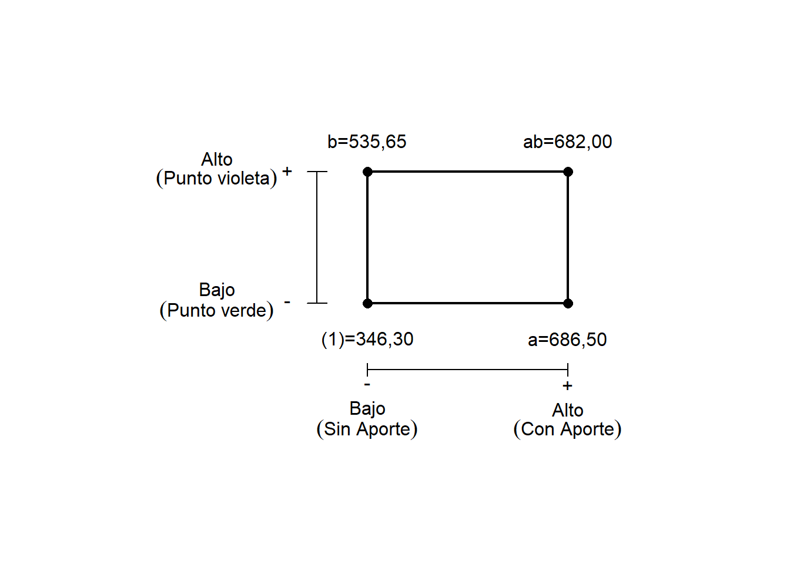

Diseño y análisis experimental
Octubre de 2020
Introducción
A continuación se presenta el análisis de un experimento que mide la resistencia a la tracción de unas probetas soldadas. Se trató de un diseño factorial completo en arreglo completamente al azar (CRFD, por sus siglas en inglés). Se trabajó un diseño del tipo \(2^k\), donde \(k=2\), obteniendo 4 tratamientos con 2 réplicas cada uno. La investigación se divide en ciertas etapas, se hace un análisis gráfico de los resultados de la experimentación, se determinan las medias de los tratamientos, se plantean los modelos de efectos y regresión para finalmente realizar un análisis de varianza y determinar efectos principales.
En este diseño en particular hay 2 factores con dos niveles cada uno. Los factores a estudiar son material de aporte (Factor A) y electrodo no consumible (Factor B). Los niveles escogidos fueron criterio del diseñador, siendo por tanto con aporte 4043 y sin aporte para el caso del factor A y electrodo punto verde y electrodo punto violeta para el factor B. De acuerdo con la notación Yates, los niveles de los factores se trabajan como altos (+) y bajos (-).
Preparación y verificación de los datos
Se cargan las liberías necesarias
library(readxl)
library(DT)
library(collapsibleTree)
library(ggplot2)
library(gridExtra)
library(tidyverse)
library(car)
library(graphics)
library(pander)
library(ggplot2)
library(knitr)
library(RVAideMemoire)NOTA: Recordar que en caso de no tener alguna libería instalada, se debe usar el comando install.packages(“Nombre_librería”), esto debe realizarse una única vez.
Con los paquetes de liberías necesarios ya cargados, procedemos a importar los datos del experimiento. Estos datos se pueden también crear de forma manual como vectores y al final concatenar todo en un respectivo dataframe. Sin importar el método de creación del dataframe, se debe asegurar que quede categorizado así, para ello se hacen ciertas comprobaciones.
En caso de que el dataframe no haya considerado los respectivos factores como tal, es necesario hacer la transformación de las categorías.
datos_tension$Mat_Aporte<- as.factor(datos_tension$Mat_Aporte)
datos_tension$Electrodo<- as.factor(datos_tension$Electrodo)Con el comando str veriicamos la naturaleza tanto de los factores como de la respuesta, esto se hace con el objetivo de evitar problemas al momento de ejecutar los modelos de regresión. Se puede observar como el esfuerzo, que es la variable respuesta, tiene categoría numérica y Material de Aporte y Electrodo tienen categoría factorial. Generalmente las réplicas no se incluyen en el dataframe, pero esta vez se realizó para demostrar que es un diseño balanceado.
## tibble [16 x 4] (S3: tbl_df/tbl/data.frame)
## $ Esfuerzo : num [1:16] 120 203 208 170 134 ...
## $ Mat_Aporte: Factor w/ 2 levels "Con_Aporte","Sin_Aporte": 1 1 1 1 1 1 1 1 2 2 ...
## $ Electrodo : Factor w/ 2 levels "P_verde","P_Violeta": 1 1 1 1 2 2 2 2 1 1 ...
## $ Repeat : chr [1:16] "I" "I" "II" "II" ...Por último, verificamos si efectivamente se trata de un diseño balanceado. Como ya se comentó, con los dos niveles por cada factor y las dos réplicas, debe haber 4 valores por cada tratamiento para un total de 16 datos.
| P_verde | P_Violeta | |
|---|---|---|
| Con_Aporte | 4 | 4 |
| Sin_Aporte | 4 | 4 |
También hacemos uso de la categoría de repetición para verificar que efectivamente haya 2 datos por cada tratamiento en cada réplica.
| Repeat | I | II | ||
| Mat_Aporte | Electrodo | |||
| Con_Aporte | P_verde | 2 | 2 | |
| P_Violeta | 2 | 2 | ||
| Sin_Aporte | P_verde | 2 | 2 | |
| P_Violeta | 2 | 2 |
Como herramienta adicional para entender la naturaleza del experimento, se presenta el siguiente diagrama de árbol, en el cual se evidencia el concepto de factorial completo, es decir, todos los niveles del segundo factor son igualmente probado en todos los niveles del primer factor.
Análisis del experimento
Análisis gráfico
De acuerdo a lo anteriormente expuesto, los diseños \(2^k\) se trabajan como altos y bajos en los respectivos niveles de sus dos tratamientos. Una forma de generalizar el experimiento es mediante el siguiente cuadro, que permite ver como se relacionan los diferentes niveles de los tratamientos y su respectiva interacción.

Esta representación es especialmente útil al momento de hallar los efectos principales de los factores.
Como primera exploración del experimiento podemos ver y analizar los promedios de cada factor y su respectiva interacción. Veamos primero las medias de los niveles del factor A, es decir material de aporte.
| Con_Aporte | Sin_Aporte |
|---|---|
| 174.8 | 114 |
Ahora, las medias de los niveles del factor B, electrodo no consumible.
| P_verde | P_Violeta |
|---|---|
| 132.8 | 156 |
Ahora bien, ver las medias de los diferentes niveles de los factores es apropiado para visualizar algunas tendencias de los datos, sin embargo, no es la forma más recomendable a la hora de analizar experimentos con varios tratamientos. La mejor forma es ver la media de los respectivos tratamientos, como se presenta a continuación.
| P_verde | P_Violeta | |
|---|---|---|
| Con_Aporte | 175.4 | 174.2 |
| Sin_Aporte | 90.26 | 137.7 |
Con dichas medias de los tratamientos, se construyen los gráficos de interacción, de cada categoría. Como su nombre lo menciona, podemos evidenciar por la morfología de las curvas, la presencia de interacciones que posteriormente se evaluarán y/o confirmarán con el análisis de varianza.
with(datos_tension2, {
interaction.plot(Mat_Aporte,
Electrodo,
Esfuerzo,
type = "l",
lty=1,
lwd=1,
legend=T,
main="Interacción material aporte - Electrodo no consumible",
xlab="Material aporte",
ylab="Resistencia media del tratamiento (MPa)",
col=c(3:8),
pch=c(19, 17, 15),
trace.label = "Electrodo",
xpd = FALSE)
interaction.plot(Electrodo,
Mat_Aporte,
Esfuerzo,
type = "l",
lty=1,
lwd=1,
legend=T,
main="Interacción electrodo no consumible - Material aporte",
xlab="Electrodo no consumible",
ylab="Resistencia media del tratamiento (MPa)",
col=c(1:3),
pch=c(19, 17, 15),
trace.label = "Material de aporte",
xpd = FALSE)})

Hay una aparente interacción entre los factores A y B que verificaremos o desmentiremos con el análisis de varianza.
Otra herramienta visual que nos permite analizar el experimiento son los diagramas de caja. En este tipo de gráficos podemos hacernos una idea de como es la varianza de los niveles de los tratamientos como la comparación entre ellos, también podemos ver los datos atípicos que presentó la experimentación.
bp1 <- ggplot(datos_tension2, aes(x=Electrodo, y=Esfuerzo)) +
geom_boxplot(fill='#A4A4A4', color="black", width=0.5) +
labs(title="Diagrama de cajas por\nElectrodo no consumible",
x="Electrodo no consumible",
y = "Resistencia última \na la tracción (MPa)")+
scale_fill_grey() +
theme_classic()
bp2 <- ggplot(datos_tension2, aes(x=Mat_Aporte, y=Esfuerzo)) +
geom_boxplot(fill='#A4A4A4', color="black", width=0.5) +
labs(title="Diagrama de cajas por\nmaterial de aporte",
x="Aporte",
y = "Resistencia última \na la tracción (MPa)")+
scale_fill_grey() +
theme_classic()
bp3 <- ggplot(datos_tension, aes(x=factor(Mat_Aporte),y=Esfuerzo)) +
geom_boxplot(aes(fill=factor(Electrodo))) +
scale_y_continuous(name = "Resistencia a la tracción (MPa)") +
scale_x_discrete(name = "Método de aporte",
labels=c("Aporte ER4043",
"Sin material de aporte")) +
ggtitle("Diagrama de cajas conjunto") +
theme_bw()+
theme(legend.position = "top")+
scale_fill_brewer(palette = "Accent",
name = "Electrodo\nno consumible",
labels = c("Punto Verde", "Punto Violeta"))
grid.arrange(arrangeGrob(bp1, bp2, nrow = 2), bp3, ncol = 2) A primera vista hay una igualdad en las varianzas de los tratamientos.
Modelo de análisis de varianza
El modelo matemático para un diseño de dos factores completamente aleatorizado puede escribirse de la siguiente forma:
\[Y_{ijk} = \mu_{ij} + e_{ijk}\] donde \(i\) representa los niveles del primer factor, \(j\) representa los niveles del segundo factor y \(k\) representa el número de repeticiones. Este modelo recibe el nombre de modelo de medias de celdas y \(\mu_{ij}\) representa la respuesta esperada en la celda \(ij\)-esima.
Se puede representar el término de respuesta en términos de los efectos e interacción.
\[\mu_{ij} = \mu + \alpha_i + \beta_j + (\alpha\beta)_{ij}\] Por tal motivo, se define la interacción como la diferencia entre las medias de los tratamientos y la porción aditiva del modelo.
\[(\alpha\beta)_{ij} = \mu_{ij} - (\mu + \alpha_i + \beta_j)\]
Si la estructura final del modelo es aditiva, significa que los términos de la interacción son iguales a cero. Reduciendo la expresión de la media de los tratamientos a \(\mu_{ij} = (\mu + \alpha_i + \beta_j)\)
Haciendo los reemplazos respectivos, llegamos al modelo de efectos. En el modelo de efectos \(\alpha_i\) y \(\beta_i\) son los efectos principales. Estos representan la diferencia entre la media marginal de todos los experimentos al \(i\)-esimo nivel del factor 1 y la media global, y la diferencia entre la media marginal de todos los experimentos al \(j\)-esimo nivel del factor 2 y la media global, respectivamente.
\[Y_{ijk} = \mu + \alpha_i + \beta_j + (\alpha\beta)_{ij} + \epsilon_{ijk}\\i=1, 2\\j=1, 2\\k=1, 2\\ \sum_{i=1}^2 \alpha_i=0 \\ \sum_{i=1}^2 \beta_j=0 \\ \sum_{i=1}^2 (\alpha\beta)_{ij}=0 \\ \sum_{j=1}^2 (\alpha\beta)_{ij}=0\]
Para poder adoptar las los resultados de las pruebas que se realicen se deben hacer ciertas suposiciones, las cuales se deben probar. Dichas suposiciones son:
- Los residuos siguen distribución normal.
- Los residuos tienen homogeneidad de varianza.
- Los residuos son independientes (espacial y temporal).
La independencia se garantiza cuando la combinación de tratamientos son asignados de forma aleatoria a las unidades experimentales. La homgeneidad de varianzas y la normalidad se pueden verificar con gráficos o con las respectivas pruebas.
Hipótesis
Para el uso del ANOVA, vamos a probar 3 hipótesis diferentes:
Hipótesis sobre igualdad en efectos del factor 1: Estudiar si hay diferencia significativa en la resistencia a la tracción promedio debido al material de aporte.
- \(H_0^{'}: \alpha_1 = \alpha_2 = 0\) (el material de aporte no influye).
- \(\\H_1^{'}:\) Al menos un \(\alpha_i\) no es igual a cero (el material de aporte influye).
Hipótesis sobre igualdad en efectos del factor 2: Estudiar si hay diferencia significativa en la resistencia a la tracción promedio debido al electrodo no consumible.
- \(H_0^{''}: \beta_1 = \beta_2 = 0\) (el electrodo no consumible no influye).
- \(\\H_1^{''}:\) Al menos un \(\beta_j\) no es igual a cero (el electrodo no consumible influye)..
Hipótesis sobre la interacción de los factores: Estudiar si hay diferencia significativa en la resistencia a la tracción promedio, debido a la interacción del material de aporte y el electrodo no consumible.
- \(H_0^{'''}: {(\alpha\beta)}_{11} = {(\alpha\beta)}_{12} = {(\alpha\beta)}_{21} = {(\alpha\beta)}_{22} = 0\) (no hay interacción)
- \(\\H_1^{'''}:\) Al menos un \((\alpha\beta)_{ij}\) no es igual a cero (hay interacción).
Análisis de Varianza
Se lleva a cabo un análisis de varianza de doble vía para determinar efectos y posibles interacciones.
Para ello, primero se genera un modelo lineal, el cual es posible usar para hallar ejecutar ANOVA ya que se trata de un modelo factorial completo. Luego mediante el comando anova obtenemos la tabla de Análisis de Varianza.
modelo_lineal = lm(Esfuerzo~Mat_Aporte*Electrodo, data=datos_tension)
modelo_anova= anova(modelo_lineal)| Df | Sum Sq | Mean Sq | F value | Pr(>F) | |
|---|---|---|---|---|---|
| Mat_Aporte | 1 | 14801 | 14801 | 7.066 | 0.02086 |
| Electrodo | 1 | 2143 | 2143 | 1.023 | 0.3318 |
| Mat_Aporte:Electrodo | 1 | 2357 | 2357 | 1.125 | 0.3097 |
| Residuals | 12 | 25137 | 2095 | NA | NA |
Medición de medias y efectos
Es posible calcular las medias (que ya se reportaron) haciendo uso del modelo de anova.
## Tables of means
## Grand mean
##
## 144.3867
##
## Mat_Aporte
## Mat_Aporte
## Con_Aporte Sin_Aporte
## 174.80 113.97
##
## Electrodo
## Electrodo
## P_verde P_Violeta
## 132.81 155.96
##
## Mat_Aporte:Electrodo
## Electrodo
## Mat_Aporte P_verde P_Violeta
## Con_Aporte 175.37 174.24
## Sin_Aporte 90.26 137.68Con el modelo de anova también se pueden extraer los efectos principales de cada nivel de los respectivos factores.
## Tables of effects
##
## Mat_Aporte
## Mat_Aporte
## Con_Aporte Sin_Aporte
## 30.415 -30.415
##
## Electrodo
## Electrodo
## P_verde P_Violeta
## -11.573 11.573
##
## Mat_Aporte:Electrodo
## Electrodo
## Mat_Aporte P_verde P_Violeta
## Con_Aporte 12.137 -12.137
## Sin_Aporte -12.137 12.137plot.design(Esfuerzo~Mat_Aporte+Electrodo, fun="mean", data=datos_tension, main=" Gráfica de efectos principales", ylab= "Resistencia a la tracción", xlab="Factores")Podemos llevar a cabo una prueba de comparación múltiple para seleccionar el mejor nivel del tratamiento, sin embargo, en nuestro caso particular que es solamente 2 niveles, con simple observación podemos sacar la conclusión.
## Tukey multiple comparisons of means
## 95% family-wise confidence level
##
## Fit: aov(formula = modelo_lineal)
##
## $Mat_Aporte
## diff lwr upr p adj
## Sin_Aporte-Con_Aporte -60.82975 -110.6898 -10.9697 0.0208617Modelo de regresión lineal
Para la investigación se considera el modelo de detección de respuesta:
\[y = \beta_{0} + \beta_{1} x_{1} + \beta_{2} x_{2} + \beta_{12} x_{1} x_{2} + \varepsilon\]
El modelo de detección de respuesta que se propone incluye efectos lineales de los factores y un coeficiente de producto cruzado, que repreenta el componente de interacción lineal del modelo.
Para conocer las propiedades del modelo generado, se hace uso de la herramienta summary.
##
## Call:
## lm(formula = Esfuerzo ~ Mat_Aporte * Electrodo, data = datos_tension)
##
## Residuals:
## Min 1Q Median 3Q Max
## -55.518 -36.053 -4.922 28.955 70.174
##
## Coefficients:
## Estimate Std. Error t value Pr(>|t|)
## (Intercept) 175.366 22.884 7.663 5.82e-06
## Mat_AporteSin_Aporte -85.105 32.363 -2.630 0.022
## ElectrodoP_Violeta -1.129 32.363 -0.035 0.973
## Mat_AporteSin_Aporte:ElectrodoP_Violeta 48.550 45.768 1.061 0.310
##
## (Intercept) ***
## Mat_AporteSin_Aporte *
## ElectrodoP_Violeta
## Mat_AporteSin_Aporte:ElectrodoP_Violeta
## ---
## Signif. codes: 0 '***' 0.001 '**' 0.01 '*' 0.05 '.' 0.1 ' ' 1
##
## Residual standard error: 45.77 on 12 degrees of freedom
## Multiple R-squared: 0.4343, Adjusted R-squared: 0.2929
## F-statistic: 3.071 on 3 and 12 DF, p-value: 0.0688También, se determinan los intervalos de confianza de los coeficientes del modelo de regresión lineal.
| 2.5 % | 97.5 % | |
|---|---|---|
| (Intercept) | 125.5 | 225.2 |
| Mat_AporteSin_Aporte | -155.6 | -14.59 |
| ElectrodoP_Violeta | -71.64 | 69.38 |
| Mat_AporteSin_Aporte:ElectrodoP_Violeta | -51.17 | 148.3 |
Verificación de supuestos
Para poder adoptar todos los resultados anteriormente reportados, es indispensable hacer ciertas verificaciones sobre los residuales del modelo. Como se mencionó en la respectiva sección. Los residuales deben cumplir tres supuestos, en caso tal de que alguno no se cumpla, se comprende como una violación grave al supuesto y hay que reformular en cierta medida el análisis.
Extracción de residuales y gráficas de análisis
Los supuestos mencionados se pueden deducir de las gráficas de los residuales. La normalidad se puede inferir a partir de la gráfica normal Q-Q. La variabilidad de cada uno de los factores se puede determinar como igual a partir del gráfico de los residuales versus los niveles de los factores (Constant Leverage). El gráfico de residuales versus las unidades experimentales sirve para determinar la independencia temporal o espacial de los residuales.
par(mfrow = c(2,2))
plot(modelo_lineal, which = 1)
plot(modelo_lineal, which = 5)
plot(modelo_lineal, which = 2)
plot(residuals(modelo_lineal) ~ Esfuerzo, data = datos_tension, main = "Residuales vs. Unidades Exp.", ylab="Residuales")
abline(h = 0)
Si bien los gráficos ofrecen una buena aproximación a la evaluación de los supuestos, el uso de las pruebas específicas son un complemento para esto.
Normalidad
| Test statistic | P value |
|---|---|
| 0.9177 | 0.155 |
## [1] "No rechazo Ho"Homogeneidad de Varianzas
datos_tension$trt<- interaction(datos_tension$Mat_Aporte, datos_tension$Electrodo)
prueba_var<-bartlett.test(modelo_lineal$residuals,datos_tension$trt)| Test statistic | df | P value |
|---|---|---|
| 0.1471 | 3 | 0.9856 |
## [1] "No rechazo Ho"ANOVA Permutacional
Aparte del análisis tradicional, es posible llevar a cabo una técnica de simulación computacional llamado ANOVA permutacional, donde en nuestro caso particular llevamos a cabo 5000 permutaciones para verificar de nuevo la varianza y mejorar en sí la potencia.
##
|
| | 0%
|
|= | 1%
|
|= | 2%
|
|== | 3%
|
|=== | 4%
|
|==== | 5%
|
|==== | 6%
|
|===== | 7%
|
|====== | 8%
|
|====== | 9%
|
|======= | 10%
|
|======== | 11%
|
|======== | 12%
|
|========= | 13%
|
|========== | 14%
|
|========== | 15%
|
|=========== | 16%
|
|============ | 17%
|
|============= | 18%
|
|============= | 19%
|
|============== | 20%
|
|=============== | 21%
|
|=============== | 22%
|
|================ | 23%
|
|================= | 24%
|
|================== | 25%
|
|================== | 26%
|
|=================== | 27%
|
|==================== | 28%
|
|==================== | 29%
|
|===================== | 30%
|
|====================== | 31%
|
|====================== | 32%
|
|======================= | 33%
|
|======================== | 34%
|
|======================== | 35%
|
|========================= | 36%
|
|========================== | 37%
|
|=========================== | 38%
|
|=========================== | 39%
|
|============================ | 40%
|
|============================= | 41%
|
|============================= | 42%
|
|============================== | 43%
|
|=============================== | 44%
|
|================================ | 45%
|
|================================ | 46%
|
|================================= | 47%
|
|================================== | 48%
|
|================================== | 49%
|
|=================================== | 50%
|
|==================================== | 51%
|
|==================================== | 52%
|
|===================================== | 53%
|
|====================================== | 54%
|
|====================================== | 55%
|
|======================================= | 56%
|
|======================================== | 57%
|
|========================================= | 58%
|
|========================================= | 59%
|
|========================================== | 60%
|
|=========================================== | 61%
|
|=========================================== | 62%
|
|============================================ | 63%
|
|============================================= | 64%
|
|============================================== | 65%
|
|============================================== | 66%
|
|=============================================== | 67%
|
|================================================ | 68%
|
|================================================ | 69%
|
|================================================= | 70%
|
|================================================== | 71%
|
|================================================== | 72%
|
|=================================================== | 73%
|
|==================================================== | 74%
|
|==================================================== | 75%
|
|===================================================== | 76%
|
|====================================================== | 77%
|
|======================================================= | 78%
|
|======================================================= | 79%
|
|======================================================== | 80%
|
|========================================================= | 81%
|
|========================================================= | 82%
|
|========================================================== | 83%
|
|=========================================================== | 84%
|
|============================================================ | 85%
|
|============================================================ | 86%
|
|============================================================= | 87%
|
|============================================================== | 88%
|
|============================================================== | 89%
|
|=============================================================== | 90%
|
|================================================================ | 91%
|
|================================================================ | 92%
|
|================================================================= | 93%
|
|================================================================== | 94%
|
|================================================================== | 95%
|
|=================================================================== | 96%
|
|==================================================================== | 97%
|
|===================================================================== | 98%
|
|===================================================================== | 99%
|
|======================================================================| 100%| Sum Sq | Df | Mean Sq | F value | Pr(>F) | |
|---|---|---|---|---|---|
| Mat_Aporte | 14801 | 1 | 14801 | 7.066 | 0.0242 |
| Electrodo | 2143 | 1 | 2143 | 1.023 | 0.3299 |
| Mat_Aporte:Electrodo | 2357 | 1 | 2357 | 1.125 | 0.3063 |
| Residuals | 25137 | 12 | 2095 | NA | NA |
Se evidencia que no hay mejora en los resultados y se sigue considerando como efecto únicamente el debido al factor A (material de aporte).
Bibliografía
Christensen, R. et al. (2016) Analysis of Variance, Design, and Regression - Linear Modeling for Unbalanced Data. Second. Albuquerque, USA: CRC Press.
Dean, A., Voss, D. y Dragulic, D. (2012) Design and Analysis of Experiments. Second, Springer Texts in Statistics. Second. Springer. doi: 10.1002/9781118147634.
Lawson, J. (2015) Design and Analysis of Experiments with R. Utah, USA: CRC Press.
Montgomery, D. C. (2012) Design and Analysis of Experiments. Eighth. Arizona: John Wiley & Sons, Inc.